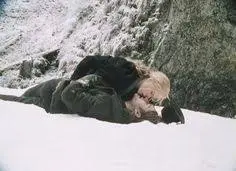

The prosecution has brought the 2003 historical epic Cold Mountain before the High Court, pushing for a clinical evaluation under the microscope. They have formally laid out two core arguments attempting to penalize the structural rating of the film’s layout:
Chief Grader MGC, presiding from the High Bench in the royal velvet robe, has completely OVERRULED both points of the prosecution’s inquest, striking them permanently from the MGC registry.
The narrative pace is not bloat. It is a deliberate, agonizing build designed to mirror the hundreds-of-miles testament of pure human devotion. Every mile of drag represents the sheer brutality Inman overcomes. The pacing is a feature, not a scuff, building directly into one of the most powerful, tragic, and unyielding climactic payoffs in cinematic history.
This is the ultimate love story of all time. The chemistry is not cold; it is pressurized by the brutal reality of war stripping two young lovers apart and destroying everyone’s lives on the landscape. Inman faces a desertion firing squad and mortal peril at every turn, choosing absolute danger just to crawl back for one single kiss from the love of his life.
The emotional peak is anchored by Ruby Thewes, the ultimate tough, single farm girl. When she breaks down and delivers her legendary testimony—“This is all man’s bullshit… they said the war was a cloud over the land and then they stand outside and say ‘shit, it’s raining”—the only time tough Ruby ever cried—it exposes the futility of the hatred breeding outside their door.
Yet, no matter how much hatred the war brings, it cannot stop love. Through hundreds of miles of sheer brutality, Inman survives. He eventually makes it back to the love of his life with nothing but an imaginary bag of diamonds.
Tragically, he is killed the very next day by the bitter hatred that war breeds. But even as he is dying, he is smiling. He receives one last kiss, holding onto her even when he can no longer breathe.
In the aftermath, she has his baby. The war is finally over, and peace shines on the land once again as she looks out over the sun-filled landscape, forever thinking of Inman.
The timeline is corrected, the errors are expunged, and the asset is officially graded MS-70 Gold. The Cold Mountain case file is closed! 🏔️👑🏆✨